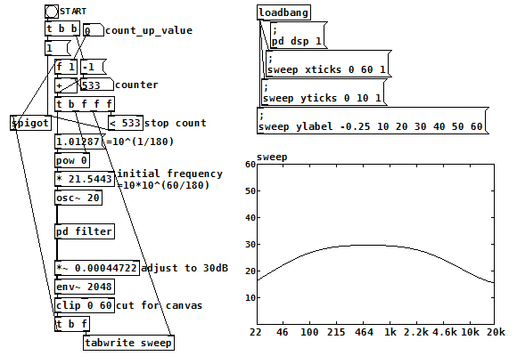

スイープ信号を使った周波数特性確認（Pure Data パッチ）
2017年09月11日 カテゴリー：Pure Data
Pure Data(Pd)で様々なフィルターをかけるときに、どんな周波数特性になるか確認しておきたい場合があります。[noise~]と[rfft~]を使うのが簡単ですが、若干ギザギザな形になるのと横軸（周波数）が対数でないので使いづらさを感じていました。そこで、スイープ信号を用いて見慣れた形で周波数特性を確認できるパッチを作りました。

（このパッチをダウンロード※上の図よりグラフが大きいです。）
＜使い方＞
[pd filter]の部分に目的の処理を入れます（今回は[hip~ 100]と[lop~ 2200]が入っています）。STARTの[○]をクリックすると、周波数スイープが始まりグラフが描画され、十数秒で自動的に終了します。count_up_valueの数値を上げると飛び飛びにスイープするため処理が早く終了します。
＜解説＞
下の方にある[env~ 2048]は常に1024サンプルごとに音量の数値を出力し、それにより[t b f]の左アウトレットからbangが出続けています。スタート前は[spigot]でそのbangがせき止められていますが、スタートして[spigot]の右インレットに1が入ることでせき止められていたbangが出力され始めます。
そして[+ ]からカウンターと同じ数値が出力され、この数値を元に計算された周波数の余弦波信号が[osc~ 20]から出力されます。その後[pd filter]を通った後の信号の音量が[env~ 2048]から出力され、Array "sweep"に書き込まれます。途中の[*~ 0.00044722]は、変化がないときの音量を30dBに合わせるためのものです。また、[clip 0 60]はデータがグラフの枠からはみ出さないように入れています。
カウンターには[f 1]内の数値が足されていき、533以上の数値になったとき[spigot]の右インレットに0が入り終了となります。
当初は[metro]を使ってbangを出力し続けていたのですが、[env~]の出力を利用する方が無駄がない気がして変更しました。Arrayのサイズは534と中途半端ですが、なんとなくグラフの大きさは500程度がちょうどいいかなと思って調整した結果となっています。